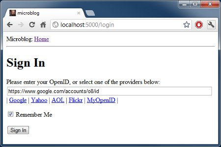

The Flask Mega-Tutorial, Part III: Web Forms (2012)
Posted by
on under(Great news! There is a new version of this tutorial!)
This is the third article in the series in which I document my experience writing web applications in Python using the Flask microframework.
The goal of the tutorial series is to develop a decently featured microblogging application that demonstrating total lack of originality I have decided to call microblog.
NOTE: This article was revised in September 2014 to be in sync with current versions of Python and Flask.
Here is an index of all the articles in the series that have been published to date:
- Part I: Hello, World!
- Part II: Templates
- Part III: Web Forms (this article)
- Part IV: Database
- Part V: User Logins
- Part VI: Profile Page And Avatars
- Part VII: Unit Testing
- Part VIII: Followers, Contacts And Friends
- Part IX: Pagination
- Part X: Full Text Search
- Part XI: Email Support
- Part XII: Facelift
- Part XIII: Dates and Times
- Part XIV: I18n and L10n
- Part XV: Ajax
- Part XVI: Debugging, Testing and Profiling
- Part XVII: Deployment on Linux (even on the Raspberry Pi!)
- Part XVIII: Deployment on the Heroku Cloud
Recap
In the previous chapter of the series we defined a simple template for the home page and used fake objects as placeholders for things we don't have yet, like users or blog posts.
In this article we are going to fill one of those many holes we still have in our app, we will be looking at how to work with web forms.
Web forms are one of the most basic building blocks in any web application. We will be using forms to allow users to write blog posts, and also for logging in to the application.
To follow this chapter along you need to have the microblog app as we left it at the end of the previous chapter. Please make sure the app is installed and running.
Configuration
To handle our web forms we are going to use the Flask-WTF extension, which in turn wraps the WTForms project in a way that integrates nicely with Flask apps.
Many Flask extensions require some amount of configuration, so we are going to setup a configuration file inside our root microblog folder so that it is easily accessible if it needs to be edited. Here is what we will start with (file config.py):
WTF_CSRF_ENABLED = True
SECRET_KEY = 'you-will-never-guess'
Pretty simple, it's just two settings that our Flask-WTF extension needs. The WTF_CSRF_ENABLED setting activates the cross-site request forgery prevention (note that this setting is enabled by default in current versions of Flask-WTF). In most cases you want to have this option enabled as it makes your app more secure.
The SECRET_KEY setting is only needed when CSRF is enabled, and is used to create a cryptographic token that is used to validate a form. When you write your own apps make sure to set the secret key to something that is difficult to guess.
Now that we have our config file we need to tell Flask to read it and use it. We can do this right after the Flask app object is created, as follows (file app/__init__.py):
from flask import Flask
app = Flask(__name__)
app.config.from_object('config')
from app import views
The user login form
Web forms are represented in Flask-WTF as classes, subclassed from base class Form. A form subclass simply defines the fields of the form as class variables.
Now we will create a login form that users will use to identify with the system. The login mechanism that we will support in our app is not the standard username/password type, we will have our users login using their OpenID. OpenIDs have the benefit that the authentication is done by the provider of the OpenID, so we don't have to validate passwords, which makes our site more secure to our users.
The OpenID login only requires one string, the so called OpenID. We will also throw a 'remember me' checkbox in the form, so that users can choose to have a cookie installed in their browsers that remembers their login when they come back.
Let's write our first form (file app/forms.py):
from flask_wtf import Form
from wtforms import StringField, BooleanField
from wtforms.validators import DataRequired
class LoginForm(Form):
openid = StringField('openid', validators=[DataRequired()])
remember_me = BooleanField('remember_me', default=False)
I believe the class is pretty much self-explanatory. We imported the Form class, and the two form field classes that we need, StringField and BooleanField.
The DataRequired import is a validator, a function that can be attached to a field to perform validation on the data submitted by the user. The DataRequired validator simply checks that the field is not submitted empty. There are many more validators included with Flask-WTF, we will use some more in the future.
Form templates
We will also need a template that contains the HTML that produces the form. The good news is that the LoginForm class that we just created knows how to render form fields as HTML, so we just need to concentrate on the layout. Here is our login template (file app/templates/login.html):
<!-- extend from base layout -->
{% extends "base.html" %}
{% block content %}
<h1>Sign In</h1>
<form action="" method="post" name="login">
{{ form.hidden_tag() }}
<p>
Please enter your OpenID:<br>
{{ form.openid(size=80) }}<br>
</p>
<p>{{ form.remember_me }} Remember Me</p>
<p><input type="submit" value="Sign In"></p>
</form>
{% endblock %}
Note that in this template we are reusing the base.html template through the extends template inheritance statement. We will actually do this with all our templates, to ensure a consistent layout across all pages.
There are a few interesting differences between a regular HTML form and our template. This template expects a form object instantiated from the form class we just defined stored in a template argument named form. We will take care of sending this template argument to the template next, when we write the view function that renders this template.
The form.hidden_tag() template argument will get replaced with a hidden field that implements the CSRF prevention that we enabled in the configuration. This field needs to be in all your forms if you have CSRF enabled. The good news is that Flask-WTF handles it for us, we just need to make sure it is included in the form.
The actual fields of our form are rendered by the field objects, we just need to refer to a {{form.field_name}} template argument in the place where each field should be inserted. Some fields can take arguments. In our case, we are asking the text field to generate our openid field with a width of 80 characters.
Since we have not defined the submit button in the form class we have to define it as a regular field. The submit field does not carry any data so it doesn't need to be defined in the form class.
Form views
The final step before we can see our form is to code a view function that renders the template.
This is actually quite simple since we just need to pass a form object to the template. Here is our new view function (file app/views.py):
from flask import render_template, flash, redirect
from app import app
from .forms import LoginForm
# index view function suppressed for brevity
@app.route('/login', methods=['GET', 'POST'])
def login():
form = LoginForm()
return render_template('login.html',
title='Sign In',
form=form)
So basically, we have imported our LoginForm class, instantiated an object from it, and sent it down to the template. This is all that is required to get form fields rendered.
Let's ignore for now the flash and redirect imports. We'll use them a bit later.
The only other thing that is new here is the methods argument in the route decorator. This tells Flask that this view function accepts GET and POST requests. Without this the view will only accept GET requests. We will want to receive the POST requests, these are the ones that will bring in the form data entered by the user.
At this point you can try the app and see the form in your web browser. After you start the application you will want to open http://localhost:5000/login in your web browser, as this is the route we have associated with the login view function.
We have not coded the part that accepts data yet, so pressing the submit button will not have any effect at this time.
Receiving form data
Another area where Flask-WTF makes our job really easy is in the handling of the submitted form data. Here is an updated version of our login view function that validates and stores the form data (file app/views.py):
@app.route('/login', methods=['GET', 'POST'])
def login():
form = LoginForm()
if form.validate_on_submit():
flash('Login requested for OpenID="%s", remember_me=%s' %
(form.openid.data, str(form.remember_me.data)))
return redirect('/index')
return render_template('login.html',
title='Sign In',
form=form)
The validate_on_submit method does all the form processing work. If you call it when the form is being presented to the user (i.e. before the user got a chance to enter data on it) then it will return False, so in that case you know that you have to render the template.
When validate_on_submit is called as part of a form submission request, it will gather all the data, run all the validators attached to fields, and if everything is all right it will return True, indicating that the data is valid and can be processed. This is your indication that this data is safe to incorporate into the application.
If at least one field fails validation then the function will return False and that will cause the form to be rendered back to the user, and this will give the user a chance to correct any mistakes. We will see later how to show an error message when validation fails.
When validate_on_submit returns True our login view function calls two new functions, imported from Flask. The flash function is a quick way to show a message on the next page presented to the user. In this case we will use it for debugging, since we don't have all the infrastructure necessary to log in users yet, we will instead just display a message that shows the submitted data. The flash function is also extremely useful on production servers to provide feedback to the user regarding an action.
The flashed messages will not appear automatically in our page, our templates need to display the messages in a way that works for the site layout. We will add these messages to the base template, so that all our templates inherit this functionality. This is the updated base template (file app/templates/base.html):
<html>
<head>
{% if title %}
<title>{{ title }} - microblog</title>
{% else %}
<title>microblog</title>
{% endif %}
</head>
<body>
<div>Microblog: <a href="/index">Home</a></div>
<hr>
{% with messages = get_flashed_messages() %}
{% if messages %}
<ul>
{% for message in messages %}
<li>{{ message }} </li>
{% endfor %}
</ul>
{% endif %}
{% endwith %}
{% block content %}{% endblock %}
</body>
</html>
The technique to display the flashed message is hopefully self-explanatory. One interesting property of flash messages is that once they are requested through the get_flashed_messages function they are removed from the message list, so these messages appear in the first page requested by the user after the flash function is called, and then they disappear.
The other new function we used in our login view is redirect. This function tells the client web browser to navigate to a different page instead of the one requested. In our view function we use it to redirect to the index page we developed in previous chapters. Note that flashed messages will display even if a view function ends in a redirect.
This is a great time to start the app and test how the form works. Make sure you try submitting the form with the openid field empty, to see how the DataRequired validator halts the submission process.
Improving field validation
With the app in its current state, forms that are submitted with invalid data will not be accepted. Instead, the form will be presented back to the user to correct. This is exactly what we want.
What we are missing is an indication to the user of what is wrong with the form. Luckily, Flask-WTF also makes this an easy task.
When a field fails validation Flask-WTF adds a descriptive error message to the form object. These messages are available to the template, so we just need to add a bit of logic that renders them.
Here is our login template with field validation messages (file app/templates/login.html):
<!-- extend base layout -->
{% extends "base.html" %}
{% block content %}
<h1>Sign In</h1>
<form action="" method="post" name="login">
{{ form.hidden_tag() }}
<p>
Please enter your OpenID:<br>
{{ form.openid(size=80) }}<br>
{% for error in form.openid.errors %}
<span style="color: red;">[{{ error }}]</span>
{% endfor %}<br>
</p>
<p>{{ form.remember_me }} Remember Me</p>
<p><input type="submit" value="Sign In"></p>
</form>
{% endblock %}
The only change we've made is to add a for loop that renders any messages added by the validators below the openid field. As a general rule, any fields that have validators attached will have errors added under form.field_name.errors. In our case we use form.openid.errors. We display these messages in a red style to call the user's attention.
Dealing with OpenIDs
In practice, we will find that a lot of people don't even know that they already have a few OpenIDs. It isn't that well known that a number of major service providers on the Internet support OpenID authentication for their members. For example, if you have an account with Google, you have an OpenID with them. Likewise with Yahoo, AOL, Flickr and many other providers. (Update: Google is shutting down their OpenID service on April 15 2015).
To make it easier for users to login to our site with one of these commonly available OpenIDs, we will add links to a short list of them, so that the user does not have to type the OpenID by hand.
We will start by defining the list of OpenID providers that we want to present. We can do this in our config file (file config.py):
WTF_CSRF_ENABLED = True
SECRET_KEY = 'you-will-never-guess'
OPENID_PROVIDERS = [
{'name': 'Google', 'url': 'https://www.google.com/accounts/o8/id'},
{'name': 'Yahoo', 'url': 'https://me.yahoo.com'},
{'name': 'AOL', 'url': 'http://openid.aol.com/<username>'},
{'name': 'Flickr', 'url': 'http://www.flickr.com/<username>'},
{'name': 'MyOpenID', 'url': 'https://www.myopenid.com'}]
Now let's see how we use this array in our login view function:
@app.route('/login', methods=['GET', 'POST'])
def login():
form = LoginForm()
if form.validate_on_submit():
flash('Login requested for OpenID="%s", remember_me=%s' %
(form.openid.data, str(form.remember_me.data)))
return redirect('/index')
return render_template('login.html',
title='Sign In',
form=form,
providers=app.config['OPENID_PROVIDERS'])
Here we grab the configuration by looking it up in app.config with its key. The array is then added to the render_template call as a template argument.
As I'm sure you guessed, we have one more step to be done with this. We now need to specify how we would like to render these provider links in our login template (file app/templates/login.html):
<!-- extend base layout -->
{% extends "base.html" %}
{% block content %}
<script type="text/javascript">
function set_openid(openid, pr)
{
u = openid.search('<username>')
if (u != -1) {
// openid requires username
user = prompt('Enter your ' + pr + ' username:')
openid = openid.substr(0, u) + user
}
form = document.forms['login'];
form.elements['openid'].value = openid
}
</script>
<h1>Sign In</h1>
<form action="" method="post" name="login">
{{ form.hidden_tag() }}
<p>
Please enter your OpenID, or select one of the providers below:<br>
{{ form.openid(size=80) }}
{% for error in form.openid.errors %}
<span style="color: red;">[{{error}}]</span>
{% endfor %}<br>
|{% for pr in providers %}
<a href="javascript:set_openid('{{ pr.url }}', '{{ pr.name }}');">{{ pr.name }}</a> |
{% endfor %}
</p>
<p>{{ form.remember_me }} Remember Me</p>
<p><input type="submit" value="Sign In"></p>
</form>
{% endblock %}
The template got somewhat long with this change. Some OpenIDs include the user's username, so for those we have to have a bit of javascript magic that prompts the user for the username and then composes the OpenID with it. When the user clicks on an OpenID provider link and (optionally) enters the username, the OpenID for that provider is inserted in the text field.
Below is a screenshot of our login screen after clicking the Google OpenID link:

Final Words
While we have made a lot of progress with our login form, we haven't actually done anything to login users into our system, all we've done so far had to do with the GUI aspects of the login process. This is because before we can do real logins we need to have a database where we can record our users.
In the next chapter we will get our database up and running, and shortly after we will complete our login system, so stay tuned for the follow up articles.
The microblog application in its current state is available for download here:
Download microblog-0.3.zip.
Remember that the Flask virtual environment is not included in the zip file. For instructions on how to set it up see the first chapter of the series.
Feel free to leave comments or questions below. I hope to see you in the next chapter.
Miguel
Become a Patron!
Hello, and thank you for visiting my blog! If you enjoyed this article, please consider supporting my work on this blog on Patreon!

-
#1 Alexander Manenko said
Good job! I'm waiting for next articles.
Is there any resources about Flask best practices? How to organize structure of the application with reusable sub-applications (blueprints?), etc.?
Is there any open source Flask-based applications with good style? -
#2 Miguel Grinberg said
Thanks! The best resource for app structure in Flask that I've found is this: https://github.com/mitsuhiko/flask/wiki/Large-app-how-to. The structure that I use is based on this, but a bit simpler, I don't use blueprints.
-
#3 drew said
a small thing, i think microblog-03.zip - run.py is missing "#!/usr/bin/env python". I can't thank you enough for this tutorial.
-
#4 Miguel Grinberg said
@drew: Yes, looks like I missed the shebang line on several of the zip files. They should all be fixed now. Thanks!
-
#5 Catherine said
Hi,
I'm working my way through the tutorial and can't get the first form to work, this is the error :
Traceback (most recent call last):
File "run.py", line 12, in <module>
from app import app
File "/Users/catherine_penfold/Sites/brownie/microblog/app/init.py", line 24, in <module>
from app import views
File "/Users/catherine_penfold/Sites/brownie/microblog/app/views.py", line 14, in <module>
from forms import LoginForm
File "/Users/catherine_penfold/Sites/brownie/microblog/app/forms.py", line 1, in <module>
from flask.ext.wtf import Form, TextField, BooleanField
File "/Library/Python/2.7/site-packages/flask/exthook.py", line 86, in load_module
raise ImportError('No module named %s' % fullname)
ImportError: No module named flask.ext.wtfany suggestions?
Thanks
Catherine
PS the time travel film was awesome! -
#6 Catherine said
Is this comment box working?
-
#7 Miguel Grinberg said
Hi Catherine, yes, the comments work, but I have to approve each comment before it is published. You won't believe the amount of spam I get on my little blog. Anyway, the problem seems to be that you don't have the WTForms extension installed, or it isn't accessible to the Python interpreter that you are using. Go back to the first article and review the virtual environment setup, the Python interpreter that you should be using (if you followed my installation method) is the one that is created as part of the virtual environment setup.
-
#8 Catherine Penfold said
Hi,
Yes I have followed all your instructions from the start.
Any other suggestions? -
#9 Miguel Grinberg said
Did you check if you have WTForms installed in your virtual environment? If you followed my instructions you should have it in /Users/catherine_penfold/Sites/brownie/microblog/flask/site-packages. You should also be running your script via the virtual environment's python interpreter, which should be at /Users/catherine_penfold/Sites/brownie/microblog/flask/bin/python. You can achieve this by adding a shebang line to your run.py script that reads #!flask/bin/python. I hope this helps!
-
#10 Catherine Penfold said
OK, I'll take it from the top tomorrow and let you know how it goes.
Thanks -
#11 Catherine Penfold said
Hi Miguel,
so taking it from the top there is no directory
/Users/catherine_penfold/Sites/brownie/microblog/flask/site-packages ???
and I am still getting the same error:
ImportError: No module named flask.ext.wtf
run.py does have the #!flask/bin/python as the first line of the script.
Do you know what is going wrong?
Thanks,
Catherine -
#12 Miguel Grinberg said
If you are using Windows, then go back to the first article and read the section on starting Python scripts on that OS. The method is different. See my reply to you on that article as well.
-
#13 Catherine said
I tried moving the site-packages folder to the flask directory to give the path above and still does not work ...???
-
#14 Catherine Penfold said
Hurray!
Hey, so I worked it out, I cam back to your scripts this morning and did ./run.py and got the same error as before, i.e. ImportError: No module named flask.ext.wtf
but then I did
. flask/bin/activate
and now everything is working fine. So between each terminal session the local installation must need activating. Will this conflict with having the site up later on?
Thanks
Catherine -
#15 Miguel Grinberg said
Catherine, glad that you figured it out, but the fact that by doing 'activate' works suggests that you were running the regular Python interpreter all this time, not the interpreter that was created for the virtual environment. The activate command just sets your path so that the Python inside the virtual environment becomes the default for your system. Instead of activating, you can achieve the same thing by having a shebang line in the run.py script that reads '#!flask/bin/python', as I indicate in the first article. Alternatively you can also run the script as follows: 'flask/bin/python run.py' (without the quotes of course). Do these options work as well? In the end it does not matter really, just keep in mind that the activate makes the Python interpreter in the virtual environment the default, so any other unrelated Python scripts that you run will go through that one as well.
-
#16 Leon Talbot said
@Catherine : flask/bin/python run.py
-
#17 lovesh said
well i had to change the route decorators from
@app.route('/index') to @app.route('/index/') and
@app.route('/login', methods = ['GET','POST']) to @app.route('/login/', methods = ['GET', 'POST'])
(add a trailing slash) for them to work -
#18 Miguel Grinberg said
@lovesh: are you sure? Even the official Flask 0.9 tutorial has routes that don't end in a slash. I'm constantly running this application on Flask 0.9 and never had any issues.
-
#19 lovesh said
@Miguel Grinberg whenever i go to http://localhost:5000/login in my browser it automatically redirects to http://localhost:5000/login/ which gives a 404 so i had to add a trailing slash to the routing rule. I got this from the quickstart section of the flask documentation where it talks about routing
-
#20 Miguel Grinberg said
@lovesh, when you say "redirect", do you mean an HTTP redirect? Is Flask sending a redirect? Because I don't see that here, if I ask for http://localhost:5000/index that is exactly what the application gets, without any redirects. You should try to figure out where is this redirect to the version of the route that ends in a slash comes from. I don't think adding a trailing slash is a big deal, but aesthetically it doesn't look great, the URLs look better without a trailing slash (in my opinion).
-
#21 lovesh said
Well i was mistaken. Its not a redirect. My browsers(Firefox and Chrome) both add a trailing slash to the urls so if i dont use the trailing slash in my route in views.py i get 404s.
-
#22 Miguel Grinberg said
I haven't found a single mention of this behavior. I do not get slashes added, could this be caused by some configuration, or maybe an extension that you use?
-
#23 ricka said
I have been following along in this series of posts and really appreciate everything here. Of note: I was running an older version of python (2.6.1) and was getting an error that had to do with a bug in that version of python (see https://github.com/mrjoes/flask-admin/issues/51). Python 2.6.5 should fix it, but I went ahead and upgraded to 2.7.3 and everything is running fine. Your first notes say 2.6 should work, but it should probably be 2.6.5 or greater.
-
#24 jimscafe said
I don't see how form.errors.open_id gets populated when the user presses submit with an empty field.
-
#25 Miguel Grinberg said
@jimscafe: could it be because the field is name 'openid' instead of 'open_id'? Try form.errors.openid, I just verified validation on this field is working fine.